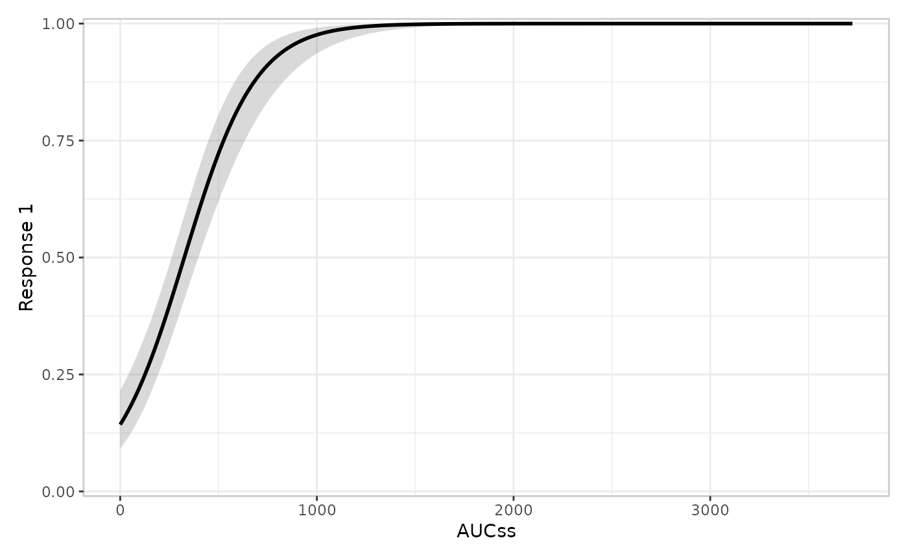
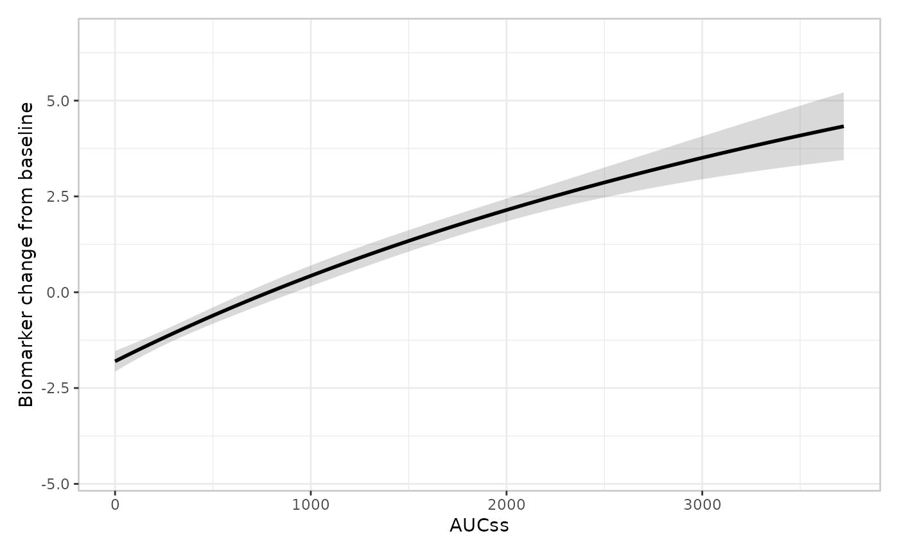
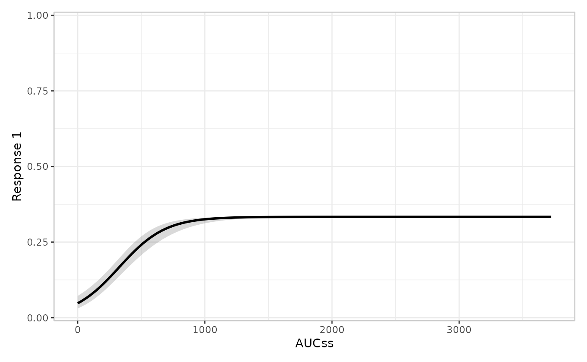
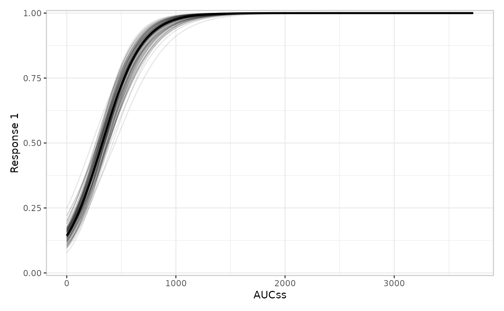
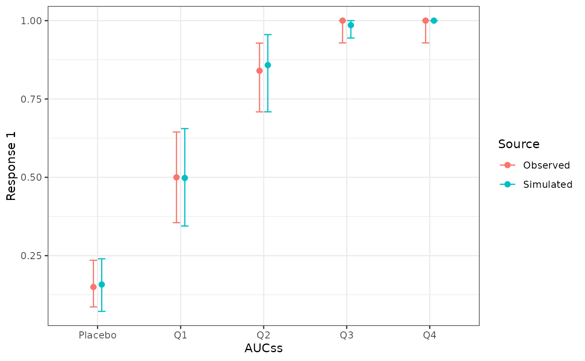
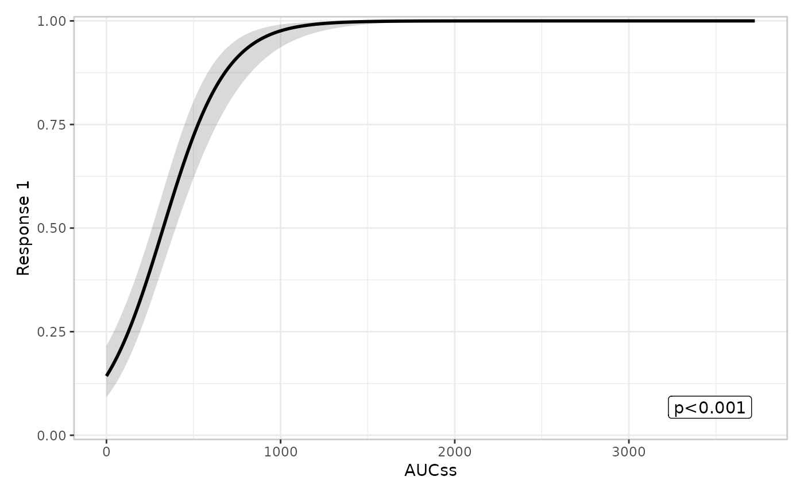
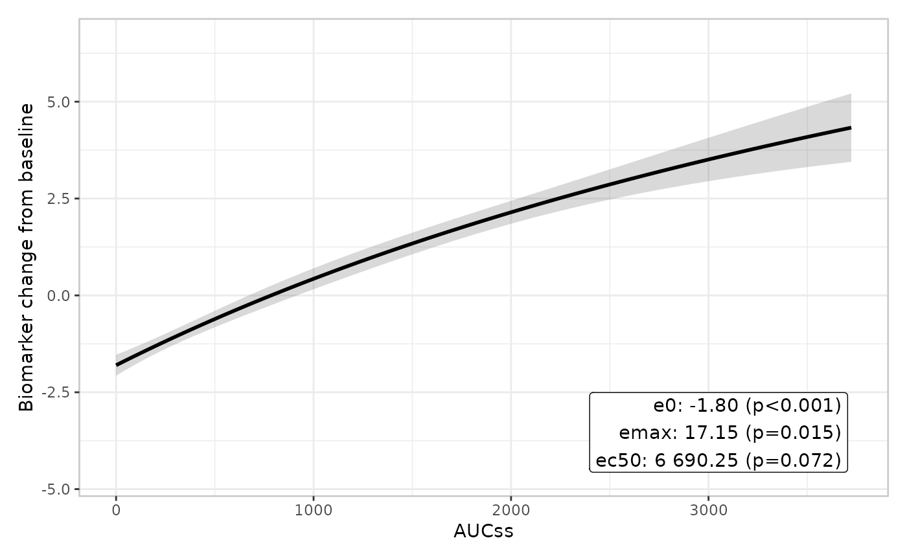
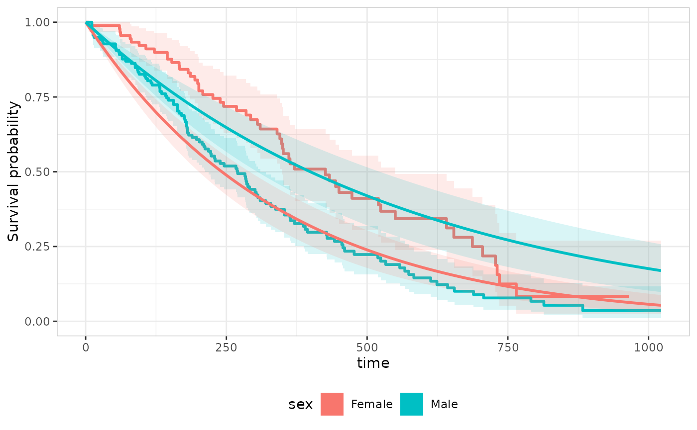

erplots never fits a model. Every plot it draws is built from
predictions, simulations, or summary statistics that some other
object hands it, via four S3 generics: er_predict(),
er_simulate(), er_summary(), and
er_predict_survival(). Collectively these are “the model
interface”, documented tersely at ?er_model_interface. This
article exists because that help topic is a contract, not a tutorial: it
tells you what each generic must return, but not what implementing one
actually looks like, or why the contract is shaped the way it is. If you
maintain a modelling package and want its model objects to work with
er_plot_add_model() and friends – or, for a time-to-event
model specifically, with er_tte_add_model() – this is the
article to read.
You’re assumed to already know your way around S3 dispatch,
predict() methods, and the general shape of a modelling
package – this article doesn’t re-explain those. What it does explain is
the erplots-specific part: which of the four generics to implement, what
each one is for, and what erplots does with the result once
you’ve implemented it.
Why a generic interface at all?
Exposure-response plots need model predictions, but “model
predictions” means something different depending on what fit the model:
a glm’s predict(type = "response"), an
nls object’s own delta-method standard errors, a Bayesian
model’s posterior draws. erplots doesn’t want to know about any of that
– it wants one stable shape it can build a geom_ribbon()
from, regardless of what produced it. er_predict() is that
shape. The same reasoning extends to er_simulate()
(uncertainty visualisation) and er_summary() (annotation
text): each is a narrow, specific question erplots needs answered,
phrased so that any model object can answer it by implementing
one S3 method.
Only er_predict() is required.
er_simulate() and er_summary() are opt-in:
their default methods return NULL, which every part of
erplots that calls them treats as “not available” rather than an error.
A model package can implement just er_predict() and get the
model curve/ribbon layer working; adding er_simulate()
unlocks spaghetti plots and VPCs; adding er_summary()
unlocks p-value/coefficient/goodness-of-fit annotations. None of the
three depends on any other being implemented.
er_predict_survival() sits apart from these three: it
has nothing to do with er_plot()/er_vpc() at
all, and only matters if your model should also plug into
er_tte_add_model()’s survival-curve overlay in the separate
er_tte() mini-grammar. It has no
NULL-returning default either – a model with no
survival-curve support should simply not implement it, and
er_tte_add_model() errors informatively if it’s called with
one anyway.
er_predict(): the one you must write
er_predict(model, newdata, conf_level = 0.95, ...)Given a fitted model and a newdata data
frame of covariate values, return newdata with three
columns added: fit_resp (the point prediction, on the
response scale), ci_lower, and ci_upper (a
conf_level confidence interval around it, also on the
response scale). Nothing else is required – no particular column order,
no class on the return value, no restriction on what other columns
newdata may already have (erplots doesn’t touch them).
Two things are worth calling out explicitly because they’re easy to get wrong:
-
The interval is on the response scale, not the link
scale. For a binary-response GLM this matters: computing the
interval on the linear predictor and then back-transforming with the
inverse link gives an asymmetric,
properly-bounded-in-
[0, 1]interval; computing it directly on the fitted probabilities does not. Get this right at the source, since erplots has no way to tell (or fix) an interval that was computed on the wrong scale. -
newdatais returned, not just used.er_predict()’s contract is “augment and returnnewdata”, not “return a new three-column data frame”. This matters whennewdatacarries a stratification column – erplots buildsnewdataas an exposure grid crossed with every stratum level when the plot is stratified, and expects that column to survive the round trip througher_predict()unchanged.
Arguments beyond
model/newdata/conf_level
The fixed signature above covers every model this article’s two toy
classes need, but some models need something else entirely – a landmark
time for a model that reduces a survival curve to
P(event by t*), say, with nowhere else in
er_predict(model, newdata, conf_level, ...)’s contract for
that value to live. That’s what the trailing ... in the
generic’s own signature is for: implement your method as
er_predict.your_class(model, newdata, conf_level = 0.95, landmark_time = NULL, ...),
and a caller reaches it via er_plot_add_model()’s
predict_args argument, kept deliberately separate from that
same function’s own ... (which reaches the
style builder instead – see Extending erplots):
er_plot_add_model(your_model, predict_args = list(landmark_time = 90))A worked example
Suppose you’re writing a small modelling package of your own. You fit
models with a thin wrapper around stats::glm(), and want
those model objects to work with erplots. Tag the class first, so
dispatch has something to catch:
fit_toy_model <- function(formula, data, family = gaussian()) {
fit <- glm(formula, data = data, family = family)
class(fit) <- c("toy_model", class(fit))
fit
}
mod <- fit_toy_model(ae1 ~ aucss, erglm_data, family = binomial())
class(mod)
#> [1] "toy_model" "glm" "lm"Prepending "toy_model" (rather than replacing the class
vector) keeps every existing glm/lm method –
predict(), summary(), coef(),
vcov() – working via ordinary S3 inheritance;
er_predict.toy_model() only needs to add the three columns
erplots wants, using stats::predict.glm() to do the actual
work:
er_predict.toy_model <- function(model, newdata, conf_level = 0.95, ...) {
z <- -qnorm((1 - conf_level) / 2)
link <- predict(model, newdata = newdata, se.fit = TRUE, type = "link")
linkinv <- family(model)$linkinv
newdata$fit_resp <- linkinv(link$fit)
newdata$ci_lower <- linkinv(link$fit - z * link$se.fit)
newdata$ci_upper <- linkinv(link$fit + z * link$se.fit)
newdata
}That’s the whole method. It’s already enough to plug into the mini language:
erglm_data |>
er_plot(aucss, ae1) |>
er_plot_add_model(mod) |>
plot()
Not every model has a predict() method that computes
standard errors for you, though. An nls fit doesn’t –
predict.nls() silently ignores se.fit. When
there’s no ready-made standard error, the delta method (a numerical
gradient of the fitted-value function with respect to the parameters,
combined with the parameter covariance matrix) is a general-purpose
fallback that works for any differentiable mean function:
emax_fun <- function(par, aucss) {
par[["e0"]] + par[["emax"]] * aucss / (par[["ec50"]] + aucss)
}
er_predict.toy_emax <- function(model, newdata, conf_level = 0.95, ...) {
z <- -qnorm((1 - conf_level) / 2)
par <- coef(model)
fit <- emax_fun(par, newdata$aucss)
eps <- 1e-6
grad <- vapply(names(par), function(nm) {
par_up <- par; par_up[nm] <- par_up[nm] + eps
par_dn <- par; par_dn[nm] <- par_dn[nm] - eps
(emax_fun(par_up, newdata$aucss) - emax_fun(par_dn, newdata$aucss)) / (2 * eps)
}, FUN.VALUE = numeric(nrow(newdata)))
se <- sqrt(rowSums((grad %*% vcov(model)) * grad))
newdata$fit_resp <- fit
newdata$ci_lower <- fit - z * se
newdata$ci_upper <- fit + z * se
newdata
}
emax_mod <- nls(
biomarker_change ~ e0 + emax * aucss / (ec50 + aucss),
data = erglm_data,
start = list(e0 = -2, emax = 5, ec50 = 1000)
)
class(emax_mod) <- c("toy_emax", class(emax_mod))
erglm_data |>
er_plot(aucss, biomarker_change) |>
er_plot_add_model(emax_mod) |>
plot()
This emax_fun()/finite-difference pairing is
deliberately hand-rolled, to keep this article dependency-free; a real
implementation would more likely reach for
numDeriv::jacobian(), or – if the fitting function already
has an analytic gradient available (as nls() itself does,
internally) – use that instead of finite differences.
A worked example: an argument beyond the fixed contract
To see predict_args actually reach a method, extend
toy_model with a landmark-style transform: a (deliberately
simplistic) rescaling of the fitted probability by how far a
caller-supplied landmark_time is from a fixed reference.
landmark_time has no slot in er_predict()’s
fixed model/newdata/conf_level
contract, so it can only arrive through ...:
er_predict.toy_landmark <- function(model, newdata, conf_level = 0.95, landmark_time = NULL, ...) {
if (is.null(landmark_time)) {
rlang::abort("`er_predict.toy_landmark()` requires `landmark_time`.")
}
out <- er_predict.toy_model(model, newdata, conf_level = conf_level)
scale <- landmark_time / 90
out$fit_resp <- pmin(out$fit_resp * scale, 1)
out$ci_lower <- pmin(out$ci_lower * scale, 1)
out$ci_upper <- pmin(out$ci_upper * scale, 1)
out
}
landmark_mod <- mod
class(landmark_mod) <- c("toy_landmark", class(landmark_mod))Omitting landmark_time errors, rather than silently
plotting an unscaled curve:
erglm_data |>
er_plot(aucss, ae1) |>
er_plot_add_model(landmark_mod) |>
plot()
#> Error:
#> ! `er_predict.toy_landmark()` requires `landmark_time`.Supplying it via predict_args reaches the method – and,
since landmark_time genuinely changes what’s plotted (a
shorter landmark means a lower probability of the event having happened
by then), a smaller value visibly flattens the curve:
erglm_data |>
er_plot(aucss, ae1) |>
er_plot_add_model(landmark_mod, predict_args = list(landmark_time = 30)) |>
plot()
The same predict_args list happily coexists with a
style builder that has its own, unrelated extra arguments
via ... – the two never collide, because they’re spliced
into two different calls (er_predict() and
style, respectively):
erglm_data |>
er_plot(aucss, ae1) |>
er_plot_add_model(
landmark_mod,
style = er_style_model_spaghetti,
predict_args = list(landmark_time = 90),
seed = 8213
) |>
plot()
#> `er_simulate()` is not implemented for objects of class
#> <toy_landmark/toy_model/glm/lm>; falling back to `style =
#> er_style_model_ribbonline`.
er_plot_add_summary()’s summary_args and
er_vpc_add_simulated()’s simulate_args work
the same way, for er_summary()/er_simulate()
methods that need an argument beyond what’s covered below.
er_simulate(): for spaghetti plots and VPCs
er_simulate(model, newdata, nsim = 100, seed = NULL, ...)Return a data frame of nsim replicates of
newdata, stacked row-wise, with a sim_id
column identifying which replicate each row belongs to, and a
fit_resp column giving that replicate’s simulated
prediction. Don’t implement this generic at all if your model can’t
support it – the default method returns NULL, and every
caller (er_style_model_spaghetti(),
er_vpc_add_simulated()) checks for NULL and
treats it as “simulation isn’t available for this model”, not an
error.
The one subtlety worth understanding is that fit_resp
here means something narrower than it sounds like. It’s a draw from the
parameter uncertainty in the model – “if the true parameters
were slightly different (as they plausibly could be, given how much data
you fit on), where would the mean curve sit?” – not a draw of an actual
observation. That’s enough for a spaghetti plot, where every faint line
is one plausible mean curve. It is not enough for a visual
predictive check, which needs to compare simulated observations
(with all their sampling noise) against observed ones – a materially
different, noisier quantity. er_simulate()’s contract has
an independently optional second column for exactly this,
sim_resp: a full response-scale draw that adds
observation-level noise on top of the parameter draw (a 0/1 draw for a
binary response, an integer draw for a count response, a draw that
includes residual variance for a continuous response). A method can
return fit_resp alone, or both columns from the same call;
there’s no reason to compute sim_resp if you only care
about spaghetti plots, but
er_vpc_add_simulated(model = ...) will refuse to run (with
an informative error, not a silently-too-narrow VPC band) if
sim_resp is missing.
A worked example
Continuing the toy_model class from above – drawing
parameter vectors from a multivariate normal approximation to the
sampling distribution of coef(model) is the standard move
for a GLM, and gives you fit_resp for free once you have
the draws:
er_simulate.toy_model <- function(model, newdata, nsim = 100, seed = NULL, ...) {
if (!is.null(seed)) set.seed(seed)
beta_hat <- coef(model)
beta_draws <- mvtnorm::rmvnorm(nsim, mean = beta_hat, sigma = vcov(model))
linkinv <- family(model)$linkinv
X <- model.matrix(delete.response(terms(model)), data = newdata)
reps <- vector("list", nsim)
for (i in seq_len(nsim)) {
eta <- as.vector(X %*% beta_draws[i, ])
fit_resp <- linkinv(eta)
reps[[i]] <- newdata |>
dplyr::mutate(
sim_id = i,
fit_resp = fit_resp,
# the extra ingredient `sim_resp` needs beyond `fit_resp`:
# observation-level sampling noise, appropriate to the response
# type (here, a binary draw at the simulated probability)
sim_resp = rbinom(length(fit_resp), size = 1, prob = fit_resp)
)
}
dplyr::bind_rows(reps)
}With this in place, both the spaghetti plot and the VPC work:
erglm_data |>
er_plot(aucss, ae1) |>
er_plot_add_model(mod, style = er_style_model_spaghetti, seed = 8213) |>
plot()
erglm_data |>
er_vpc(aucss, ae1) |>
er_vpc_add_observed() |>
er_vpc_add_simulated(model = mod, nsim = 50, seed = 4471) |>
plot()
Had er_simulate.toy_model() only ever populated
fit_resp, the spaghetti plot above would still work
unchanged, but the er_vpc_add_simulated() call would error,
naming sim_resp as the missing ingredient, rather than
quietly drawing a too-narrow band from fit_resp alone.
The seed handling above is a plain
set.seed() for readability; erglm’s own
er_simulate.erglm_model() additionally auto-picks and
reports a seed when the caller doesn’t supply one (via
rlang::inform()), so a plot is reproducible even when
nobody thought to pass seed = – worth considering for your
own implementation if reproducibility of unseeded calls matters to your
users.
Like er_predict(), er_simulate() may need
an argument beyond
model/newdata/nsim/seed
– a toy_landmark-style
er_simulate.your_class(model, newdata, nsim, seed, landmark_time = NULL, ...),
say. er_vpc_add_simulated()’s simulate_args
reaches it the same way er_plot_add_model()’s
predict_args reaches er_predict() above:
er_vpc_add_simulated(vpc, model = your_model, simulate_args = list(landmark_time = 90))
er_summary(): annotation text
er_summary(model, ...)Return NULL (again, the default – don’t implement this
generic if there’s nothing sensible to report) or a named list with any
of three independently-optional keys: p_value,
coefficients, glance. Unrecognised keys are
permitted and ignored by the built-in summary builders, which gives your
own package room to stash extra fields for a custom builder to read,
without erplots ever needing to know about them.
er_plot_add_summary() always forwards
conf_level to er_summary() (useful for a
coefficients result’s
conf_low/conf_high columns – neither toy
method below needs it, but erglm::er_summary.erglm_model()
does), plus anything supplied via its summary_args argument
– the same mechanism as er_predict()’s
predict_args, for an argument beyond
model/conf_level.
-
p_value– a single headline p-value (orNULL), for a model with one unambiguous exposure effect.er_style_summary_pvalue()reads this directly. Only return a non-NULLvalue here when there really is one privileged term; picking one arbitrarily out of several candidates would be misleading. -
coefficients– a tibble/data frame, one row per model parameter, for models where no single term deserves top billing. Required columns:term,estimate. Optional:label(a display name, falling back totermif absent),std_error,statistic,p_value,conf_low,conf_high(eachNAwhere not computed/meaningful for that row). Read byer_style_summary_coefficients(). Column names are snake_case, notbroom::tidy()’s dotted names – matching this package’s existing convention elsewhere (p_value,corner_distance). -
glance– a single-row tibble/data frame of model-level goodness-of-fit,broom::glance()-style: optionaln,df_residual,logLik,aic,bic,deviance,r_squared(NAif not meaningful – e.g. for a non-Gaussian model),converged. Read byer_style_summary_gof().
These three keys are independent, not mutually exclusive
alternatives: a model with one privileged coefficient can (and, for
erglm, does) return all three at once – p_value for a quick
annotation, coefficients/glance for anyone who
wants more detail via a different summary builder. A model with no
privileged term, on the other hand, should return
p_value = NULL explicitly rather than omit the key, so
callers can tell “there genuinely isn’t one” apart from “this method
hasn’t been updated yet”.
A worked example: the single-coefficient case
For toy_model, aucss’s coefficient is the
one term worth headlining:
er_summary.toy_model <- function(model, ...) {
coefs <- summary(model)$coefficients
if (nrow(coefs) < 2) return(NULL) # intercept only, nothing to report
list(p_value = unname(coefs[2, "Pr(>|z|)"]))
}
erglm_data |>
er_plot(aucss, ae1) |>
er_plot_add_model(mod) |>
er_plot_add_summary(model = mod) |>
plot()
A worked example: the multi-parameter case
toy_emax’s three parameters (e0,
emax, ec50) have no single “the” effect –
there’s no term you could headline with a lone p-value without implying
the other two don’t matter. This is exactly the
coefficients-instead-of-p_value case the
contract exists for:
er_summary.toy_emax <- function(model, ...) {
s <- summary(model)$coefficients
coefficients <- tibble::tibble(
term = rownames(s),
estimate = s[, "Estimate"],
std_error = s[, "Std. Error"],
statistic = s[, "t value"],
p_value = s[, "Pr(>|t|)"]
)
list(p_value = NULL, coefficients = coefficients)
}
erglm_data |>
er_plot(aucss, biomarker_change) |>
er_plot_add_model(emax_mod) |>
er_plot_add_summary(model = emax_mod, style = er_style_summary_coefficients) |>
plot()
Note the explicit p_value = NULL above, and the explicit
style = er_style_summary_coefficients on the
er_plot_add_summary() call –
er_style_summary_pvalue() is still the default
summary builder regardless of which model is attached, and it would
silently draw nothing here (correctly: it reads
config$p_value, sees NULL, and has nothing to
show) rather than falling back to coefficients on your
behalf. Matching a model whose er_summary() populates
coefficients with a builder that actually reads
coefficients is left to you, the caller –
er_summary()’s job is only to make the data available.
er_predict_survival(): the er_tte() model
overlay
er_predict_survival(model, newdata, time_grid, conf_level = 0.95, ...)Powers a single, specific thing: er_tte_add_model()’s
parametric S(t) curve/ribbon, overlaid on a Kaplan-Meier
estimate in the separate er_tte() mini-grammar (time on the
x-axis, survival probability on the y-axis – see Time-to-event plots). It has nothing to do with
er_plot()/er_vpc(); a model that implements
er_predict()/
er_simulate()/er_summary() gets no benefit
from also implementing this one, or vice versa.
The contract differs from er_predict()’s in one
structural way: newdata carries one row per covariate
profile (e.g. one row per stratification level), with no time
column at all – times come from the separate time_grid
argument instead. Return newdata cross-joined with
time_grid (one row per newdata row ×
time_grid value), with three columns added:
time, fit_survival (the point estimate of
S(time | newdata row)), ci_lower, and
ci_upper. Unlike er_predict()’s
fit_resp, there’s no ambiguity about scale to get right
here – a survival probability only ever has one scale,
[0, 1].
There’s no NULL-returning default method, unlike
er_simulate()/ er_summary(): a model with no
survival-curve support should simply not implement this generic at all,
and er_tte_add_model() errors informatively (naming the
model’s class) if it’s called with one anyway.
A worked example
Suppose your modelling package fits parametric survival models via
survival::survreg(). A Weibull or log-normal fit needs its
own scale parameter accounted for, but the exponential case – where
proportional hazards and accelerated failure time coincide – keeps the
maths simple enough to work through by hand, so that’s what this example
uses:
library(survival)
fit_toy_survival <- function(formula, data) {
fit <- survreg(formula, data = data, dist = "exponential")
class(fit) <- c("toy_survival", class(fit))
fit
}
lung_sex <- lung |> transform(sex = factor(sex, labels = c("Male", "Female")))
mod_survival <- fit_toy_survival(Surv(time, status == 2) ~ sex, lung_sex)
class(mod_survival)
#> [1] "toy_survival" "survreg"survreg()’s exponential model is an
accelerated-failure-time model on the log-time scale,
log(T) = X * beta + error, with error’s
distribution fixed (no separate scale parameter to estimate, unlike
Weibull/log-normal). That means
S(t | x) = exp(-t * exp(-X * beta)), and
coef(model)/vcov(model) already give you
everything needed for both the point estimate and its uncertainty – no
numerical delta method required, since the linear predictor
X * beta enters S(t | x) through a strictly
monotonic transform. That monotonicity is what lets the method below
build a confidence interval by computing one for the linear
predictor first, then mapping its two endpoints through
S(t | x), rather than propagating a standard error through
a nonlinear function the way er_predict.toy_emax() had to
earlier in this article:
er_predict_survival.toy_survival <- function(model, newdata, time_grid, conf_level = 0.95, ...) {
z <- -qnorm((1 - conf_level) / 2)
X <- model.matrix(delete.response(terms(model)), data = newdata)
beta <- coef(model)
eta <- as.vector(X %*% beta)
se_eta <- sqrt(rowSums((X %*% vcov(model)) * X))
grid <- newdata[rep(seq_len(nrow(newdata)), each = length(time_grid)), , drop = FALSE]
grid$time <- rep(time_grid, times = nrow(newdata))
eta <- rep(eta, each = length(time_grid))
se_eta <- rep(se_eta, each = length(time_grid))
grid$fit_survival <- exp(-grid$time * exp(-eta))
grid$ci_lower <- exp(-grid$time * exp(-(eta - z * se_eta)))
grid$ci_upper <- exp(-grid$time * exp(-(eta + z * se_eta)))
rownames(grid) <- NULL
grid
}That’s the whole method. Plugged into
er_tte_add_model(), it overlays the fitted exponential
curve (with its confidence band) on top of the Kaplan-Meier estimate for
each stratum:
lung_sex |>
er_tte(time, status == 2, stratify_by = sex) |>
er_tte_add_curve() |>
er_tte_add_model(mod_survival) |>
plot()
The exponential fit is visibly too smooth relative to the
Kaplan-Meier step curve – a single constant hazard per stratum can’t
reproduce the data’s own shape – which is exactly the kind of
model-vs-data mismatch an S(t) overlay like this one exists
to make visible. A Weibull or log-normal fit would track the step curve
more closely, at the cost of an extra scale parameter this simplified
method doesn’t handle – extending it that way is a reasonable next step
for a real implementation, not covered here.
Testing your implementation
There’s no formal conformance checker for this interface – it’s four plain S3 generics, so the real test is simply exercising the layers that call them:
-
er_plot_add_model(your_model)exerciseser_predict()alone. -
er_plot_add_model(your_model, style = er_style_model_spaghetti)additionally exerciseser_simulate()’sfit_resp. -
er_vpc_add_simulated(model = your_model, ...)additionally exerciseser_simulate()’ssim_resp. -
er_plot_add_summary(model = your_model)(paired with whichever summary builder matches what yourer_summary()populates) exerciseser_summary(). -
er_tte_add_model(your_model)exerciseser_predict_survival()– a separate check from the four above, since it belongs to theer_tte()grammar rather thaner_plot()/er_vpc().
If you only implement er_predict(), that’s a complete,
valid implementation –
er_simulate()/er_summary() are additive, not
phases of a single required rollout, and
er_predict_survival() is unrelated to all three (it only
matters if your model also has something to say about
er_tte()’s time-to-event grammar). And if a method
genuinely can’t do better than the default (NULL), leaving
it unimplemented is the correct choice, not a gap to apologise for:
every erplots builder that depends on
er_simulate()/er_summary() already has to
handle “not available” gracefully, since the default method returns
NULL for every model class that hasn’t implemented one.
er_predict_survival() is the one exception to that pattern
– its default method errors rather than returning NULL,
since there’s no plotting fallback for a survival curve nobody can
compute.
If your method requires an argument beyond the fixed contract (like
toy_landmark’s landmark_time above), remember
that exercising it means passing
predict_args/summary_args/simulate_args
explicitly – calling er_plot_add_model(your_model) with no
predict_args will correctly error if your method has no
default for that argument, the same way toy_landmark’s did
above.
Real-world implementations
The examples above are toy classes built for this article. Three real packages implement this interface for production modelling code, and are worth reading directly if you want to see the pattern applied to a less simplified model:
-
erglm wraps
glm()-based exposure-response models. Itser_predict.erglm_model()ander_simulate.erglm_model()methods follow the same shape astoy_model’s above (link-scale prediction with an inverse-link transform; a multivariate-normal draw over the coefficient vector for simulation) but handle all four families erglm supports (binomial/poisson/gaussian/Gamma), plus the auto-seed-and-report behaviour mentioned above. Itser_summary.erglm_model()populates all three keys at once (p_valuefor the exposure coefficient,coefficientsfor every term,glancefor goodness-of-fit). -
emaxnls fits
genuine Emax/sigmoidal models via
nls(), and is the real-world analogue oftoy_emaxabove:er_summary.emaxnls()always returnsp_value = NULLand populatescoefficients(one row perE0/Emax/logEC50) instead, for exactly the reason discussed above – no single parameter is “the” effect. Itsemax_logistic()variant fits a binary response but returns an object with classc("emaxlogistic", "emaxnls"), so it reuses the same three methods via ordinary S3 inheritance; the methods branch internally (oninherits(model, "emaxlogistic")) to keep predictions bounded in[0, 1]and to draw Bernoulli rather than Gaussian noise forsim_resp, rather than needing a fourth, separate set of methods. -
ertte implements
the full interface for time-to-event models:
er_predict()/er_simulate()/er_summary()methods for scalar landmark-binary/RMST reductions of a survival curve (letting a time-to-event model plug into the ordinaryer_plot()/er_vpc()grammar too), pluser_predict_survival.ertte_model()– wrapping its ownertte_predict()– for the fullS(t)curve overlayer_tte_add_model()needs. Unliketoy_survivalabove, it handles the Weibull/log-normal scale parameter this article’s simplified exponential example sidesteps, viaertte_predict()’s own machinery rather than the from-scratch delta method used here.
All three are Suggests-only dependencies of erplots (see
DESCRIPTION), used here only as worked examples – there’s
no requirement to depend on any of them to implement this interface for
your own model class.
See also
-
?er_model_interfacefor the terse, canonical statement of the contract this article expands on. -
The exposure-response plotting grammar for
how
er_predict()/er_simulate()/er_summary()’s outputs flow into the layers that consume them (config$predictions,config$summary,config$p_value, and so on). - Extending erplots if, once your model works with the built-in layers, you also want to change how a layer draws that model’s output – a different kind of extensibility from the one this article covers.
-
Time-to-event plots for
er_tte_add_model()’s overlay in action against a real implementation (ertte), and the rest of theer_tte()grammar it plugs into.